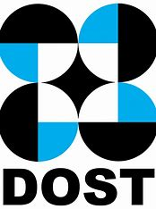

MY RESUME
Daisylene Suzy Ross - First Portfolio

Objective:
An enthusiastic college student with a proven ability to handle tasks in a timely and efficient manner, I am confident in my ability to excel in a role that requires adaptability, strong communication skills, and a proactive approach to problem-solving. My goal is to become a valuable asset to the organization and grow both personally and professionally in the process.
Education
- Polytechnic University of the Philippines - Taguig Branch | Bachelor of Science in Information Technology - 2023-2025
- Polytechnic University of the Philippines - Taguig Branch | Diploma in Information Communication Technology - 2020-2023
Work Experience:
- Atos End User Support Intern

- Maintained accurate records of laptop inventory and deployment status
- Tested the re-imaged laptops to ensure they are fully functional and meet the needs of our production staff
- Performed hardware and software troubleshooting on the re-imaged laptops as needed
- DOST System Developer Intern

- Collaborated with a team to design and develop a system catering to scholar students seeking internships, primarily responsible for managing the front-end development.
- Demonstrated expertise in graphic design by creating visually appealing and intuitive interfaces
- Collaborated with back-end developers, fostering a cross-functional teamwork
Skills
- Basic Microsoft Office Skills
- Photo and Video Editing Skills
- Basic Writing and COmmunication Skills
- Basic Google Office Skills
- Basic Web Programming Skills
- Basic Web Programming Skills
Awards, Certification and Achievements
Awards:
- Leadership Awardee (2021-2023)
- Service Awardee (2022-2023)
- President's Lister (2022-2023)
- Dean's Lister - First Semester (2021-2022)
- Academic Achiever - Second Semester (2020-2021)
Certifications:
- Theoretical and Practical Understanding of SQL
Others:
My Contact
My Hobbies